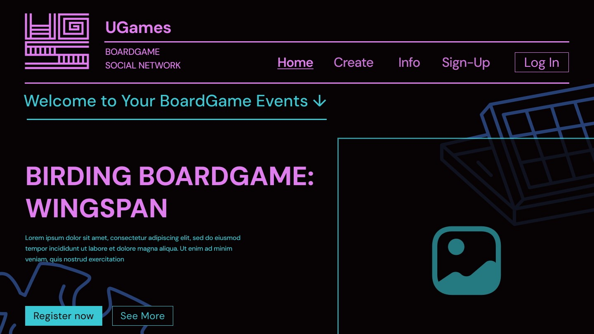
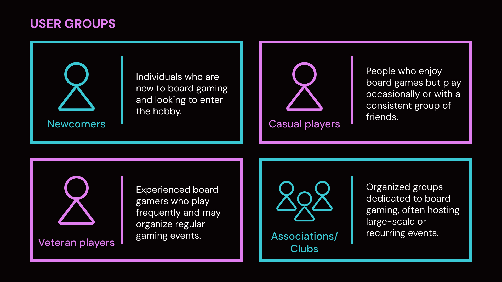
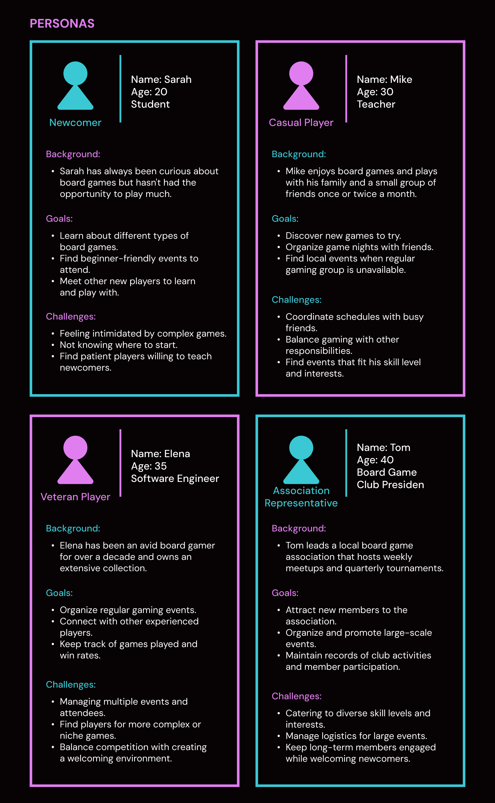
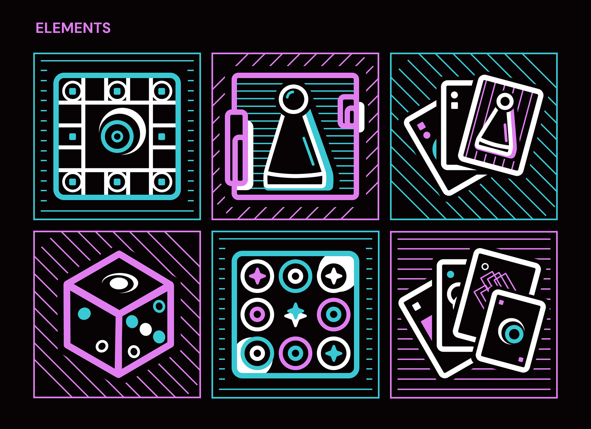
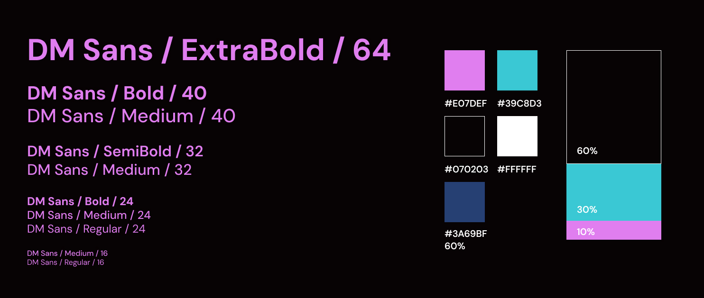

Find a table. Host a table. Remember every game you ever played.找到一张桌子，组起一张桌子，记住每一局。
One platform that folds event organisation, social networking and play tracking into a single
loop — designed to work equally well for someone who has never rolled a die and for the president
of a weekly board game club.
一个把「活动组织 + 社交网络 + 游玩记录」折叠进同一条闭环的平台 —— 让第一次掷骰子的人和每周办局的俱乐部主席，都能在同一套系统里顺畅地完成自己想做的事。

Cover screen — event spotlight, primary call-to-action and the neon board-game
visual language.封面页 —— 活动推荐位、主行动点，以及贯穿全站的霓虹桌游视觉语言。
Role我的角色
UI/UX Designer — sole designer on the team; owned research, IA, visual
system and prototype.UI/UX 设计师 —— 团队唯一设计师，负责用户研究、信息架构、视觉系统与高保真原型。
Competitive audit · User segmentation · Personas · IA · Visual
system · Element library · Hi-fi prototype竞品审计 · 用户分层 · Persona · 信息架构 · 视觉系统 · 元素图形库 · 高保真原型
Platform平台范围
Responsive web, with mobile accessibility & push notifications scoped
into the architecture.响应式网页，并在架构层预留移动端可访问性与通知推送能力。
01
In one minute一分钟读懂
Project Overview全局项目简介
UGames is a digital home for the tabletop community. Board gamers are already online — but they
are spread across a database site for rules, a generic event site for meetups, and a map app for
finding tables. Nobody owns the full journey. UGames takes the four things a
board gamer actually does — find a game, host a session, track plays, keep the crew
together — and builds them as one continuous experience, from first curiosity to a
ten-year club archive.
UGames 是为桌游社群打造的数字主场。桌游玩家其实早就在网上了 —— 但人被打散在三个地方：查规则用数据库站、约局用通用活动平台、找附近的人用地图应用。没有一个产品承接完整旅程。
UGames 把桌游玩家真正在做的事 —— 找局、组局、记战绩、留住牌友 —— 做成了同一条连续体验：从第一次好奇，到一个十年的俱乐部档案。
Five things worth knowing五个最值得记住的点
A closed loop nobody else closes. Event management, friend graph and play
history live in one account, so a single action in one area feeds value into the other two.
Competitors each cover one slice — and none of them connect the slices.补上了没人补的那一环。活动管理、好友关系、游玩记录共用同一个账号体系，任一处的动作都会给另外两处带来价值。竞品各自只覆盖其中一段，没有一家把三段接通。
Designed for a spectrum, not an average. Two-axis segmentation
(experience level × play frequency) produced 4 user groups and 4 personas — from a 20-year-old
who has never played, to a 40-year-old club president running quarterly tournaments. One IA
serves all four.为光谱设计，而不是为平均值设计。用「经验水平 × 游玩频率」双轴切分出 4 类用户群与 4 个 Persona —— 从没玩过的 20 岁学生，到每季度办锦标赛的 40 岁俱乐部主席。同一套信息架构同时服务这四类人。
IA cut by task, not by feature. 11 screens organised as a hub-and-spoke:
five entry hubs off the home page, a four-tab personal hub, and two cross-cutting concerns
(mobile accessibility, notifications) promoted to architecture-level citizens.按任务切 IA，而不是按功能切。11 个页面组织成 hub-and-spoke 结构：首页分流出 5 个入口 hub，个人中心下设 4 个二级页，而「移动端可访问性」与「通知」被提升为贯穿全站的架构级议题，而不是事后补的浮层。
A visual system built to scale. A single typeface (DM Sans) at five
weights and six sizes, a deliberate 60/30/10 colour split of ink black, neon cyan and orchid
pink, and a six-piece illustration grammar that translates physical board-game objects into
interface language.可规模化复用的视觉系统。单一字族 DM Sans × 5 个字重 × 6 级字阶；墨黑、霓虹青、兰紫粉刻意按 60/30/10 配比分工；6 件套插画语法把桌游的实体物件翻译成界面语言。
Prototyped, not just specified. The full journey — sign up → discover →
register → connect → track — is clickable in Figma, and the design system shipped to
front-end as a component-ready spec.不止于文档，而是可点击的原型。完整旅程 —— 注册 → 发现 → 报名 → 社交 → 记录 —— 在 Figma 中可交互走通；视觉系统以「可直接实现」的组件规格交付给前端。
Why it matters为什么这件事值得做
Board gaming is a social hobby with an anti-social digital footprint. The hardest part of
playing more is never the game — it is coordinating people. UGames is therefore designed as a
coordination product first and a catalogue second: every screen is judged by
whether it shortens the distance between "I'd like to play" and "we're playing on Thursday."
桌游是社交爱好，却有着一个反社交的数字足迹。妨碍人多玩几局从来不是游戏本身，而是「凑人」。所以 UGames 的设计定位是先做协调工具，再做游戏目录 ——
每个页面的评判标准只有一个：它是否缩短了「我想玩」到「周四我们开局」之间的距离。
02
The starting point设计思路起点
Problem & Opportunity问题与机会
The category is not empty — it is fragmented. Four established services each
solved one dimension of the problem well, and each left a different dimension untouched. The
audit below is deliberately written to credit what each competitor does better than us, because
the opportunity only becomes visible once the strengths are honest.
这个赛道并不空白，而是破碎。四个成熟服务各自把某一个维度解决得很好，同时各自留下了另一个没被碰过的维度。下表的审计刻意先写清每个竞品「比我们强在哪」—— 只有把强项写诚实了，机会点才看得见。
Service平台
Positioning定位
What it does best它最强的地方
The gap it leaves它留下的空缺
BoardGameGeek
A monumental predecessor丰碑级的行业前辈
An unrivalled game database, deep forums, and the community's shared
vocabulary for rating games.无人能及的桌游数据库、深度论坛，以及整个社群共用的评分语言。
Built as an information hub, not a social network — organising an
actual session is outside its model.本质是信息枢纽而非社交网络 —— 「真的把人约起来开一局」不在它的能力模型里。
Meetup.com
Generic event platform通用活动平台
Mature, trusted infrastructure for organising recurring local
events.成熟可信的本地活动组织基础设施，尤其擅长周期性活动。
Not vertical: no board-game metadata (game type, player count, rules
weight, teaching availability).不是垂直产品：没有桌游专属字段（游戏类型、人数、上手难度、是否愿意教学）。
GameFor
Board game app桌游工具型 App
Location-based discovery — genuinely good at surfacing games
happening near you.基于定位的发现能力 —— 在「找附近的局」这件事上确实做得好。
Limited social layer; relationships reset after each event instead of
compounding.社交层薄弱；每场活动结束后关系就归零，无法沉淀成长期牌友。
The Board Game Atlas
Community桌游社区
Combines a game database with active discussion and community
knowledge.把游戏库和活跃讨论结合起来，社群知识沉淀得好。
Optimised for discussion rather than doing — no event loop and no
personal play record.为「讨论」优化而非为「做事」优化 —— 没有组局闭环，也没有个人游玩记录。
Methodology方法论
Competitive audit → gap positioning. Instead of asking "which features are
missing?", the audit asked "which scenario is broken?". That reframing is what
produced the positioning statement — the problem was never a missing button, it was a broken
hand-off between deciding to play and actually playing.
竞品审计 → 空白定位。审计没有问「谁少了哪个功能」，而是问「哪个场景是断的」。这个提问方式的转换直接产出了定位结论 ——
用户遇到的从来不是少一个按钮，而是「决定要玩」和「真的玩上」之间那一次断裂的交接。
Positioning statement定位结论
A more complete, tailored experience that integrates event management, social
networking and game tracking in a single, user-friendly platform — purpose-built
for the board gaming community and for players at every level, from first-timers to veteran
organisers.
一个更完整、更贴合的体验：把活动管理、社交网络与游玩记录整合进同一个顺手的平台 ——
专为桌游社群而建，并同时服务从第一次上手到资深组织者的所有段位。
03
Who we are designing for为谁而设计
User Research用户研究
"Board gamers" is too blunt a unit to design for — an 18-year-old's first session and a club
president's quarterly tournament have almost nothing in common. So users were cut along
two axes: experience level and play frequency, which produced four groups. One
representative persona was then developed for each group, so that every later decision could
answer a concrete question: whose problem does this solve, and whose does it not?
「桌游玩家」这个单位太粗，无法用来做设计 —— 18 岁新手的第一次开局和俱乐部主席的季度锦标赛，几乎没有共同点。因此用户按两条轴切分：经验水平 × 游玩频率，得到四类用户群；再为每一类发展一个代表性
Persona。这样后续每一个设计决策都能回答一个具体问题：这解决了谁的什么问题，又没有解决谁的？
Four user groups四类用户群
Newcomers新手
People who are new to board gaming and looking for a way in.对桌游完全陌生，正在寻找切入方式的人。
Casual players休闲玩家
People who enjoy board games but play occasionally, or with a consistent
group of friends.喜欢桌游，但只偶尔玩，或只跟固定的一小圈朋友玩。
Veteran players资深玩家
Experienced gamers who play frequently and often organise their own regular
sessions.高频游玩的资深玩家，通常自己就在组织固定局。
Associations / Clubs协会 / 俱乐部
Organised groups dedicated to board gaming, frequently hosting large-scale or
recurring events.有建制的桌游组织，经常承办大型或周期性活动。

User groups — segmentation by experience level and play frequency.用户群 —— 按经验水平与游玩频率切分。
Four personas, four different pressures四个 Persona，四种压力
Each persona was written with background, goals and challenges — the third field is the one that
drove design, because a goal tells you what to build and a challenge tells you what to remove.
每个 Persona 都包含背景、目标与挑战 —— 其中「挑战」才是真正驱动设计的字段：目标告诉你该做什么，挑战告诉你该拿掉什么。
Sarah · 20 · Student
The Newcomer新手代表
Background背景
Always curious about board games, but has never had the opportunity to play
much.一直对桌游很好奇，但一直没有真正上手的机会。
Goals目标
Learn about different types of board games.了解不同类型的桌游。
Find beginner-friendly events to attend.找到对新手友好的活动并参加。
Meet other new players to learn and play with.认识其他新玩家，一起学、一起玩。
Challenges挑战
Feels intimidated by complex games.面对复杂游戏容易有压力。
Doesn't know where to start.不知道该从哪里开始。
Needs patient players willing to teach.需要找得到有耐心教她的人。
Mike · 30 · Teacher
The Casual Player休闲玩家代表
Background背景
Plays with family and a small group of friends once or twice a
month.每月和家人、一小圈朋友玩一两次。
Goals目标
Discover new games worth trying.发现值得一试的新游戏。
Organise game nights with friends.组织朋友间的游戏之夜。
Find local events when the regular group is unavailable.固定局凑不齐时，能找到本地散场。
Challenges挑战
Coordinating schedules across busy friends.朋友们都很忙，排期极难协调。
Balancing gaming against other responsibilities.要在桌游和其他责任之间做取舍。
Finding events that fit his skill level and interests.找到匹配自己水平和兴趣的活动。
Elena · 35 · Software Engineer
The Veteran Player资深玩家代表
Background背景
An avid gamer for over a decade, with an extensive personal
collection.玩了十几年桌游，家里收藏规模可观。
Goals目标
Organise regular gaming events.组织固定周期的活动。
Connect with other experienced players.认识同水平的资深玩家。
Keep track of games played and win rates.记录玩过的游戏与胜率。
Challenges挑战
Managing multiple events and attendees.多场活动与参与者的管理负担。
Finding players for more complex or niche games.复杂或小众游戏找不到对口的玩家。
Balancing competition with a welcoming atmosphere.要兼顾竞技感和友好的欢迎氛围。
Tom · 40 · Club President
The Association Representative协会代表
Background背景
Leads a local board game association that hosts weekly meetups and quarterly
tournaments.带领本地桌游协会，每周办固定局、每季度办锦标赛。
Goals目标
Attract new members to the association.为协会拉新成员。
Organise and promote large-scale events.组织并推广大型活动。
Maintain records of club activity and member participation.留存俱乐部活动与参与度记录。
Challenges挑战
Catering to wildly different skill levels and interests.要同时照顾差异极大的水平和兴趣。
Managing logistics for large events.大型活动的后勤与协调。
Keeping long-term members engaged while welcoming newcomers.既要留住老成员，又要接住新人。

Persona board — background, goals and challenges for all four representative
users.Persona 板 —— 四个代表性用户的背景、目标与挑战。
Synthesis研究综合
Reading the four challenge lists side by side, three recurring tensions emerged — and these,
not the feature requests, became the actual design brief:
把四份「挑战」并排放在一起看，浮现出三条反复出现的张力 —— 它们（而不是功能清单）才是真正的设计任务书：
Tension 01张力 01
Threshold门槛
Newcomers are afraid of complexity and don't know where to start; veterans
need harder, more niche tables.新手怕复杂、不知从何下手；资深玩家却需要更硬核、更小众的局。同一套入口要同时降低和抬高门槛。
→ Drives: skill-level tagging and
filtering in discovery.→ 推导出：发现环节的「段位标签 + 筛选」。
Tension 02张力 02
Coordination协调
Casual players are blocked by friends' calendars; organisers must manage large
groups with mixed abilities.休闲玩家卡在朋友的时间表上；组织者则要管一大群水平参差的人。
→ Drives: structured event creation,
shared calendar, notifications.→ 推导出：结构化的事件创建、统一日历、通知提醒。
Tension 03张力 03
Retention留存
One-off events leak people; there is nothing that turns a good evening into a
lasting group.一次性活动留不住人；没有任何东西能把「一个愉快的晚上」变成「一个长期的小圈子」。
→ Drives: tagging-based friend
graph, play history, saved games.→ 推导出：标签化好友体系、游玩历史、收藏记录。
04
How the solution was shaped解法如何成形
Design Strategy & Principles设计策略与原则
The three tensions map one-to-one onto three design pillars. This is the spine of the project:
research produced tensions, tensions produced pillars, pillars produced screens. Nothing in the
final UI exists without a line back to a persona's challenge.
三条张力一一对应三大设计支柱。这是整个项目的脊柱：研究产出张力，张力产出支柱，支柱产出页面。最终 UI 里没有任何一个元素，是找不到一条线回溯到某个 Persona 的挑战的。
Pillar 01支柱 01
Discover发现
Push the right table in front of the user instead of asking them to
browse. Public event listings, search and filter by game type, player count, time and
skill level.把「合适的那张桌子」推到用户面前，而不是让他自己去翻列表。公开活动列表 + 按游戏类型、人数、时间、段位筛选。
Pillar 02支柱 02
Organise组织
Drive the cost of coordination toward zero: a structured creation flow, a
public/private toggle, friend invitations, and one calendar that shows everything coming
up.把协调成本压到接近零：结构化创建流程、公开/私密切换、好友邀请，以及一个把「所有即将发生」装进去的日历。
Pillar 03支柱 03
Connect & Track连接与记录
Turn one-off events into compounding relationships. Friends are taggable by
preference and availability; play history and saved games make progress visible.把一次性活动变成会复利的关系。好友可按偏好和可约时间打标签；游玩历史与收藏记录让「积累」看得见。
Five design principles五条设计原则
Level-agnostic entry. Every entry point works for someone at
their first game and someone at their five-hundredth — achieved through the same UI, differing
only in filter defaults.全段位可进入。每个入口对第一次玩的人和玩了五百次的人都成立 —— 用同一套 UI 实现，只通过筛选默认值区分。
Three clicks to the core action. Join an event, create an event
and edit a profile are each reachable within three interactions from the home
page.核心动作三次点击可达。报名活动、创建活动、编辑资料，都能在首页起三次交互内完成。
Create once, reuse everywhere. One event object serves the
listing, the calendar, the notification and the history — no duplicate data entry for the
organiser.一次创建，多处复用。同一个活动对象同时供列表、日历、通知和历史使用 —— 组织者不需要重复录入。
Public and private are equals. Private sessions are not an
edge case bolted on; they are a first-class toggle in the creation flow, because most casual
play happens among friends.公开与私密同等重要。私密局不是事后补的边缘情况，而是创建流程里的一等选项 —— 因为大多数休闲局本来就发生在朋友之间。
Mobile is not a shrunken desktop. Accessibility and push
notifications are designed into the architecture upfront rather than retrofitted.移动端不是缩小版桌面。可访问性与通知推送在架构阶段就被设计进去，而不是后期打补丁。
Non-goals — what UGames deliberately does not do非目标 —— UGames 刻意不做的事
BoardGameGeek already owns this and does it far better. Duplicating it
would add cost and dilute focus.这是 BGG 的地盘，且它做得远比我们好。重复建设只会增加成本、稀释重点。
Real-time chat / voice实时聊天 / 语音
High moderation and infrastructure cost; asynchronous invitations
and reminders cover the coordination need for this version.审核与基建成本极高；在这一版里，异步邀请与提醒已经足够覆盖协调需求。
In-game scoring, ranking or tournaments engine对战计分、排行榜、赛事引擎
UGames is a coordination platform, not a competitive one. "Win rate"
is a personal record, not a leaderboard.UGames 是协调平台，不是竞技平台。「胜率」是个人记录，不是排行榜。
Marketplace / second-hand trading商城 / 二手交易
Introduces payment, dispute and logistics complexity with no direct
benefit to the core loop.会引入支付、纠纷与物流复杂度，而核心闭环并不因此受益。
05
Structure结构设计
Information Architecture信息架构
Eleven screens are organised as a hub-and-spoke: the home page only routes, the
two dense hubs (events, personal) do the work, and every leaf is two levels deep at
most. Naming was kept to the user's verbs — search, create, save, notify — rather than
internal module names, so the structure is learnable from the labels alone.
11 个页面组织为 hub-and-spoke 结构：首页只负责分流，两个高密度 hub（活动、个人）承担主要工作，所有叶子页面最深不超过两级。命名统一用用户的动词 ——
搜索、创建、收藏、通知 —— 而不是内部模块名，让结构单靠标签就能学会。
Home Page
Event Search Page活动搜索页A list of public events users can join · search and filter
options可加入的公开活动列表 · 搜索与筛选
Main structure & key features — the shipped sitemap behind the layout
above.主结构与核心功能 —— 上方结构的原始站点地图。
Methodology方法论
Task-driven IA. Two decisions are worth calling out. First, the home page was
stripped of content until it only routes — the featured-event block is the single exception,
because it doubles as the proof that the platform is alive. Second, notifications were
made a page, not a popover: because they carry two different kinds of information
(event reminders and friend activity), users need to be able to come back and read them, which
a transient toast cannot support.
任务驱动的信息架构。有两个决策值得单独说明。其一，首页被删减到只做分流 —— 唯一的例外是活动推荐位，因为它同时证明了「这个平台是活的」。其二，通知被做成页面，而不是浮层：因为它同时承载两类不同信息（活动提醒与好友动态），用户需要有「回头再看一遍」的入口，而瞬时消失的 toast 做不到这件事。
06
System design系统设计
Visual System视觉系统
The visual system had one job: make a digital product feel like it belongs on a table. That meant
neon, high-contrast, slightly retro graphics — and then a set of rules strict enough that the
playfulness never becomes noise.
这套视觉系统只有一个任务：让一个数字产品，感觉像是属于一张桌子的。这需要霓虹、高对比、略带复古的图形 —— 但随后必须配上一套足够严格的规则，让这种趣味性永远不会变成噪音。
Typography — one family, six sizes字体 —— 一个字族，六级字阶
Role层级
Spec规格
Used for用途
Display
DM Sans · ExtraBold · 64
Hero titles, event spotlights主视觉标题、活动推荐位
H1
DM Sans · Bold / Medium · 40
Page titles页面标题
H2
DM Sans · SemiBold / Medium · 32
Section headers, card titles区块标题、卡片标题
H3
DM Sans · Bold / Medium / Regular · 24
Sub-sections, list headings子区块、列表标题
Body
DM Sans · Medium / Regular · 16
All running text and metadata所有正文与元信息
Methodology方法论
One family, many weights. Committing to a single typeface reduces font
payload and keeps the interface visually coherent; hierarchy is then carried by weight and
size rather than by mixing families. DM Sans was chosen for its geometric roundness — it stays
legible against a near-black background and holds up at display size, where a more neutral
grotesque would feel flat against the neon.
单一字族，多字重。只用一个字族能显著减少字体加载量，同时保持界面视觉一致；层级改由字重和字号承担，而不是靠混搭字族。选 DM Sans 是因为它的几何圆润感 ——
在近黑背景上依然清晰，放大到展示级字号时也不塌；换成更中性的 grotesque 字族，在霓虹语境下会显得平板。
Colour — a 60/30/10 split with assigned duties颜色 —— 60/30/10 配比，且各有分工
Colour carries meaning, not decoration. Cyan always means "actionable" —
links, selected states, primary buttons. Pink always means "identity" — brand marks, headings,
emphasis. Because the two never swap roles, a user learns the system within a few screens.
The 60% ink base exists purely to let the two neon accents stay loud without becoming
fatiguing.
颜色承载语义，而不是装饰。青色永远表示「可操作」—— 链接、选中态、主按钮；粉色永远表示「身份」—— 品牌标记、标题、强调。因为两者从不互换角色，用户看几屏就能学会这套系统。60%
的墨黑底色存在，唯一目的就是让两种霓虹强调色可以一直响亮，却不会让人疲劳。
Element library — six objects, one grammar元素库 —— 六个物件，一套语法
Six board-game objects were redrawn as interface illustrations: the board, the meeple, the hand of
cards, the die, the token set, and the fanned deck. Each is built from the same three ingredients —
heavy outline, diagonal hatch fill, duotone accent — so they read as one family at any size.
六个桌游物件被重新绘制为界面插画：棋盘、棋子、手牌、骰子、筹码、展开的牌组。每一个都由同样的三种成分构成 —— 粗描边、斜线网纹填充、双色点缀 ——
因此在任何尺寸下都被识别为同一个家族。

Element library — six board-game objects sharing one illustration
grammar.元素库 —— 六个桌游物件，共用同一套插画语法。

Type scale, colour tokens and the 60/30/10 distribution rule.字阶、颜色 token 与 60/30/10 配比规则。
Methodology方法论
A graphic grammar beats a pile of illustrations. Drawing six one-off
pictures would have produced six inconsistent assets that break the moment they need to be
resized or recoloured. Defining three shared rules instead means new objects can be added
later by anyone, and every asset survives both a hero banner and a 24px icon.
一套图形语法胜过一堆插画。画六张一次性的图，只会得到六个互不一致的素材，且一旦需要改尺寸或换色就会崩掉。改为定义三条共享规则，意味着后续任何人都能继续扩充新物件，且每个素材在 hero 大图和 24px
图标两种场景下都成立。
07
What shipped落地内容
Core Features核心功能
Event management活动管理
Create public or private sessions with the fields board gamers actually need:
game type, player count, location and time — so a listing answers "is this for me?"
without a follow-up message.创建公开或私密局，字段就是桌游玩家真正要的那几个：游戏类型、人数、地点、时间 —— 让一条活动信息自己就能回答「这局适合我吗」，不需要再私聊追问。
Calendar view日历视图
Every upcoming event in one place, so members can plan a gaming schedule
instead of discovering a clash after committing.把「所有即将发生」放在同一个地方，让成员能提前排期，而不是先答应下来才发现撞了。
Friends with tagging好友与标签
Connect with like-minded players and organise contacts by gaming preference
or availability — turning a contact list into something you can actually query when
forming a table.认识口味相投的玩家，并按游戏偏好或可约时间整理联系人 —— 把「通讯录」变成「组局时真的能查得动」的东西。
Saved games & play history收藏与游玩历史
A personal record of games saved, games played and participation — the
mechanic that gives veterans a reason to return after the event is over.记录收藏的游戏、玩过什么、参与过哪些活动 —— 这是让资深玩家在活动结束后仍有理由回来的机制。
Notification page通知页
Both event reminders and friend activity in one readable, revisitable
destination — not a disappearing toast.活动提醒与好友动态汇总在一个可阅读、可回看的页面里 —— 而不是一闪而过的浮层。
Mobile accessibility & push移动可访问性与推送
Scoped at architecture level rather than as an afterthought: a board game
event almost always happens away from a desk, so social events are inherently a mobile
use case.在架构层就被纳入，而非后期补丁：桌游活动几乎都发生在书桌之外，社交类事件天生就是移动场景。
08
Click through it可交互走通
Interaction Prototype交互原型
The full journey is prototyped end-to-end, because a coordination product cannot be evaluated
from static screens — the value only appears when you follow one persona from "I'm curious" all
the way to "see you Thursday."
完整旅程做了端到端原型 —— 因为一个协调类产品无法用静态稿评估：它的价值只有当你跟着一个 Persona 从「我有点好奇」一路走到「周四见」的时候才会显现出来。
09
Who built it谁做的
Team & Contributions团队与分工
Yihan Lou
UI/UX DesignerUI/UX 设计师
Competitive audit, user segmentation, personas, IA, visual system, element
library, hi-fi prototype.竞品审计、用户分层、Persona、信息架构、视觉系统、元素图形库、高保真原型。
Edgar Brunaud
Front-end Developer前端开发
Implemented the interface from the design system and prototype.依据设计系统与原型实现界面。
Data model, accounts, event and friendship stores.数据模型、账号体系、活动与好友关系存储。
10
Honest accounting诚实的复盘
Outcome, Limits & Next成果、局限与下一步
What was delivered交付了什么
A competitive audit with gap positioning across four established
services.覆盖四家成熟服务的竞品审计与空白定位。
A two-axis segmentation model, four user groups and four fully specified
personas.双轴用户分层模型、四类用户群与四个完整定义的 Persona。
An 11-screen information architecture with documented rationale for its two
contested decisions.11 个页面的信息架构，并为其中两个有争议的决策附上了论证。
A complete visual system: type scale, colour tokens with semantic roles, and a
six-piece reusable element library.完整的视觉系统：字阶、带语义分工的颜色 token、6 件套可复用元素库。
A clickable high-fidelity prototype covering the full user journey, handed to
front-end implementation.覆盖完整用户旅程的可交互高保真原型，并已交付前端实现。
What we did not prove我们没能证明的部分
Limitations局限
The research here is desk-based and competitor-derived. The personas are
reasonable constructions from grouped behaviour, not transcripts — no interviews were
conducted with real board gamers, and no usability testing was run on the prototype.
Consequently the personas should be treated as hypotheses to validate, not as
evidence. The 3-click principle and the notification-as-a-page decision in particular are
unverified assumptions that a first round of testing would likely challenge.
本项目的研究是桌面研究 + 竞品推导的产物。Persona 是基于行为归类的合理建构，而不是访谈逐字稿 —— 我们没有对真实桌游玩家做访谈，也没有对原型跑过可用性测试。因此这些 Persona 应当被当作待验证的假设，而不是证据。
尤其是「三次点击可达」原则与「通知做成页面」这两个决策，属于尚未验证的假设，第一轮测试很可能就会提出挑战。
What we would do next接下来会做什么
Validate the threshold assumption. Run a moderated usability
test with five true newcomers (Sarah-type) to check whether skill tagging genuinely lowers the
entry barrier, or merely relabels it.验证「门槛」假设。招募 5 位真正的新手（Sarah 型）做有主持的可用性测试，检验段位标签是真的降低了进入门槛，还是只是把门槛换了个说法。
Test the organiser's load, not the player's. Tom-type club
organisers are the heaviest users and the ones the retention loop depends on; the creation
flow deserves its own round of task-based testing.测组织者的负担，而不是玩家的。Tom 型的俱乐部组织者是使用强度最高、也是留存闭环最依赖的人；创建流程值得单独做一轮任务型测试。
Decide the notification model on evidence. Instrument whether
users revisit the notification page at all — if they don't, the page is overhead and a digest
email is the better answer.用证据决定通知形态。埋点观察用户到底会不会回看通知页 —— 如果不会，这个页面就是纯开销，改用摘要邮件更合适。
Define the north-star metric. This project never picked one.
The candidate — number of repeat tables formed between at least two returning
members — measures the loop, not vanity activity.确定北极星指标。本项目从未选定一个。候选方案是「至少两名复访成员之间重复组局的次数」—— 它衡量的是闭环，而不是虚荣活跃度。
Takeaway结论
The most transferable lesson from UGames is not the neon interface — it is that
re-framing the question moved the design. Asking "which scenario is broken?"
instead of "which feature is missing?" turned four separate products into one positioning
gap, and turned four persona challenge lists into three concrete design pillars. A feature
list would have shipped a fifth fragmented tool.
UGames 最可迁移的经验不是那套霓虹界面 —— 而是换一个提问方式，就换掉了一整套设计。把「缺哪个功能」换成「哪个场景断了」，让四个各自成立的产品收敛成一个定位空白；也让四份 Persona 的挑战清单收敛成三根具体的设计支柱。如果当初按功能清单做，做出来的只会是第五个同样破碎的工具。